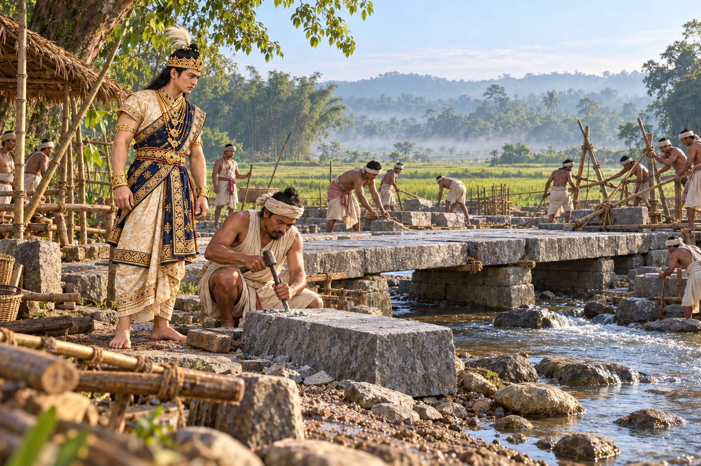

Rangnath Dol and the Namdang Stone Bridge
1703 · The Tungkhungia kings

Rudra Singha builds the Rangnath Dol and the Namdang stone bridge, cut from a single rock, followed by the Fakuwa Dol in 1703–04.
The painting selects Namdang bridge construction; Rangnath Dol is a separate site and is not placed beside the bridge.
Sources
People: Rudra Singha (Sukhrungphaa)
Open this scene in the interactive archive · Follow this event on MAP